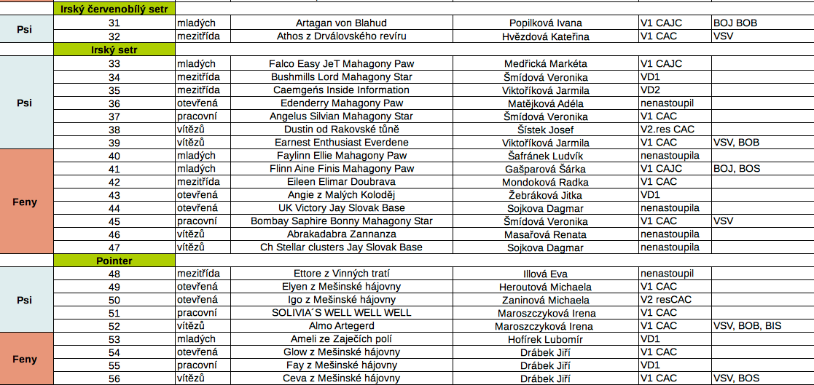
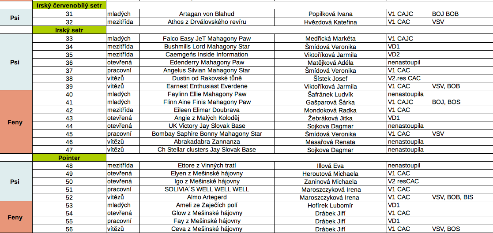

Ať už ve vás tento titulek vzbudil úsměv či zděšení, dočtěte prosím článek do konce, neboť je psán v zájmu nás všech a především v zájmu chovu a zejména další existence našich angličanů.
Asi nepovím nic objevného, když připomenu, že doba se neustále mění, že vždy bude existovat jakýsi souboj mezi starší a novou generací; mezi světem mužů a žen, mezi zastánci pracovních a exteriérových kvalit a mezi myslivci a nemyslivci.
ROZDÍLNÉ POJMY
Ale možná řeknu něco „objevného", když připomenu, že není úplně na místě spojovat pojmy chovatelství a myslivost, a to ani ve světle toho, že dle stanov se klub zabývá: „řízeným chovem anglických ohařů" a tento chov „se snaží zaměřovat na jejich loveckou upotřebitelnost v kontextu s tradicí myslivosti".
Podívejme se tedy, co toto v praxi znamená a co by znamenat mělo:
1. KLUB STANOVUJE PODMÍNKY, ZA KTERÝCH JE JEDINEC UCHOVNĚN.
Je to nejdůležitější nástroj klubu, neboť tímto má klub vlastně jakýsi monopol na tvorbu štěňat s PP, ovšem současně i značnou zodpovědnost vůči plemeni, jeho kvalitě (nejen pracovní, ale i exteriérové a zdravotní) a v nepřímém důsledku i odpovědnost za popularitu štěňat bez PP.
Celkově pak vliv na poptávku po plemeni, vliv na cenu štěňat s PP a tato politika se samozřejmě odráží i v konkurenceschopnosti nejen mezi chovateli navzájem, ale i vůči zahraničí. Všichni víme, že chovatelství není činností, na které by člověk zrovna zbohatl, pokud jí dělá s plným nasazením, nicméně je třeba si uvědomit, že je na tuto činnost, stejně jako na některé aspekty činnosti klubu, hledět z pozice marketingových pravidel, jinak se totiž snadno dostáváme do stavu, kdy kvalitní jedinci zůstávají majitelům do pokročilého věku na dvorku a jejich cena je směšná. Do stavu, kdy kousek za hranicemi je cena štěněte 4x větší než u nás a ani tato skutečnost mnohdy nezvyšuje poptávku po našich štěňatech s PP.
REGIONÁLNÍ CHOV JE PŘEŽITEK
Samozřejmě, že dříve šlo chov dělat více méně regionálně, bez internetu, bez propagace plemene, bez propagace chovatele, bez dalekého cestování a s minimálními náklady. Nedomnívám se, že tento stav je možný udržet i dnes.
ŽENY VEDOU NAŠÍ KYNOLOGII
Stejně jako není možné udržet v dnešních podmínkách to, že dříve se chovu věnovali spíše zájemci o myslivost a dnes je převaha těch, co mají psa spíše jako rodinného společníka a přítele. Slýcháme, že tento stav je žalostný a také často to, že tento stav je způsobený rostoucím počtem žen chovatelů. Ale pánové, čistě matematicky - samotný nárůst počtu žen, by přeci ve svém důsledku mohl mít pouze efekt navýšení zájmu o zkoušky. Důvod by tedy, pokud bychom uznali tento argument, spočíval spíše v tom, že se mění poměr - tj počet mužů se zájmem o chov angličanů neroste nebo dokonce klesá. A zde je nutno se ptát proč. Nesouvisí to s reálným využitím angličana v myslivosti?
NEDOSTATEČNÝ DŮRAZ NA EXTERIÉR I ZDRAVÍ CHOVNÝCH JEDINCŮ
Přečteme-li si chovné podmínky, řeší se tři aspekty - exteriér a zdraví (dle mého osobního názoru nedostatečně, ale to by bylo na samostatný článek) a pracovní kvality, jež jsou řešeny nejvíce. A i přesto jsou neustále diskutovány.
postel-2
2. DLE DIKCE STANOV, PŘI UCHOVŇOVÁNÍ JEDNOTLIVÝCH PLEMEN MÁ BÝT KLADEN DŮRAZ PŘEDEVŠÍM NA JEJICH „VROZENÉ VLASTNOSTI".
Ale děje se tak? Nebo se stále setkáváme s názory, že zkoušky vloh vlastně nestačí a je na ně pohlíženo jako na něco méněcenného? Pokud se jedná o slovo „vrozené", jde zcela nepochybně o geneticky přenositelnou informaci a tudíž evidentně z hlediska chovu nejpodstatnější. Toto je mimo jiné zdůrazněno u zkoušek vloh i tím, že se jedná o zkoušky jaksi základní/prvotní, kdy pes není ještě ovlivněn dalšími stupni výcviku.
OBYČEJNÁ ZKOUŠKA JE NEJPODSTATNĚJŠÍ
Avšak tato, na první pohled zcela jasná záležitost, se v praxi jeví jako poměrně problematická, neboť stále uslyšíme názory, že je neúnosné, pokud složení této „obyčejné" zkoušky stačí k chovnosti, a že je toto nemístným ústupkem. Ale proč by složení zkoušek vloh stačit nemělo? Na dalších typech zkoušek se přeci prokazuje lovecká upotřebitelnost psa, a zde již záleží nikoli jen na vrozených vlastnostech, ale i na schopnostech drezéra a vůdce.
Není tedy lovecká upotřebitelnost dosažená na dalších typech zkoušek spíš již jakousi nadstavbou? Není toto již cílem spíše „myslivosti" a nikoli prioritně „chovu"?
ZVYŠOVÁNÍ BONITY JEDINCE
Samozřejmě v zájmu chovu je (a klub by to měl všemožně podporovat), aby zejména chovní jedinci měli i další zkoušky, ale domnívám se, že je nutno si uvědomit, že toto je již třeba vnímat nikoli jako „hodnotnější podmínku chovnosti" jedince, ale spíše jako „zvyšování bonity jedince", presentaci chovatele/majitele, praktickou potřebu majitele nebo naplnění jiných osobních ambicí a tvorby okruhu zájemců o štěňata takové feny či zájemců o krytí takovým psem.
POZORNOST PŘEDEVŠÍM
Nedomnívám se tedy, že na zkoušky vloh by nemělo být ve vztahu k chovnosti pohlíženo jako na jakýsi ústupek a něco méněcenného, jak se dnes často děje, ale naopak, by se právě k nim v otázce chovnosti měla naše pozornost upínat především. Navíc význam těchto zkoušek lehce pochopí i majitel psa, který se dále nehodlá (nebo alespoň prozatím nehodlá - neboť i toto se pod pozitivní zkušeností často mění) lovecké upotřebitelnosti psa věnovat. A víme dobře, že velmi často ten „nejhorší sedlák má ty nejlepší brambory". Přidáme-li k tomu, že tito majitelé bývají velmi často ochotni pro svoje psy udělat na obecné rovině možné i nemožné a příprava na zkoušky vloh není nijak zásadně náročná, je zde opravdu velký prostor k zamyšlení.
VÝZNAM KLUBOVÝCH ZKOUŠEK VLOH
Pokud by se tedy mělo něco měnit, tak pohled na ně a jejich posuzování v praxi a na význam klubových zkoušek vloh.
Plní klub v tomto ohledu svoji funkci dostatečně? Neměl by :
1. Vynaložit větší úsilí k pořádání vícero přípravných kurzů
Jinými slovy zlepšit dostupnost výcviku; pomoc nezkušeným majitelům nebo těm, co nemají možnost v místě svého bydliště chodit do honitby? Využívat za tímto účelem kvalitní a zkušené výcvikáře s tendencí ochotně předávat své zkušenosti a vědomosti? Zájem o tyto kurzy nepochybně je, což potvrdila i vysoká účast na letošním výcvikovém kurzu, kdy byla všechna místa beznadějně rezervována dávno dopředu, a to nejen na kurz samotný, ale i na následné ZV. A hodnocení kurzu i jeho výsledky předvedené na následných ZV byly více než uspokojivé. Není však jeden kurz ročně málo? A jeden termín klubových zkoušek vloh? Nebylo by současně i vhodné použít pořádání takových kurzů i jako významný nástroj pro několikadenní pozorování jedinců a jejich schopností a hodnocení úrovně stavu schopností populace? A jako výchozí krok pro podporu a nasměrování nadějných jedinců? Nebylo by vhodné toto více využít v tom, aby se angličani neúčastnili zkoušek vloh mimo klub?
2. Snažit se o větší propagaci právě zkoušek klubových
Nedělat z nich strašáka, ale něco hodnotnějšího a smysluplnějšího; něco spojeného i s příjemným setkáním lidí se stejnými zájmy; příležitost ke získání cenných zkušeností; příležitost k odlišení kvality v posuzování vloh angličanů a příležitost k celkové osvětě o schopnostech a jedinečnosti našich plemen? Snažit se tyto zkoušky cílit i více pro majitele, jež nemají přímý kontakt s myslivostí?
PROPAGACE A ZÍSKÁVÁNÍ ZÁJEMCŮ
Uvědomme si, že posláním klubu je i propagace plemene, získávání dalších zájemců o plemeno a snaha o udržení dostatečného počtu těchto jedinců v chovu. Domnívám se, že pokud bude dostatečná možnost kvalitního a vstřícného výcviku pod zkušenými klubovými výcvikáři, bude následně i větší zájem o zkoušky klubové, potažmo o zkoušky další, nejen vlohové. Toto samozřejmě můžeme docílit i restrikcí předpisů, ale mnohem účinnější se mi jeví nastavit propagaci, osvětu a zejména podmínky tak, aby lidé o jejich absolvování měli sami zájem. Hodnota klubových zkoušek vloh je pak zřejmá, neboť výběr rozhodčích na tyto zkoušky zajistí kvalitní posouzení vloh, neboť zkušený a plemeneznalý rozhodčí přeci velmi lehce odhalí vhodný potenciál psa i chyby způsobené vůdcem. Naopak neodpustí chyby vlohové. A o to především v chovu jde. Pokud pak přímo klub podchytí jedince s výjimečnými schopnosti, můžeme hovořit o dalším pozitivu, neboť dnes se velmi často stává, že takový jedinec absolvuje zkoušky jinde, je vyloučen a jeho majitel odrazen a naopak, jedinec, který na tom není tak dobře, zkoušky někde absolvuje. (Toto se ovšem netýká jen ZV!).
Na tomto místě a v souvislosti s výše uvedeným, je třeba rovněž připomenout FT a jeho význam. Je bez diskuze, že toto je původním naplněním smyslu chovu anglických ohařů a jiné typy zkoušek se aplikují na angličany až vlivem regionálních podmínek. Pokud bychom tedy chtěli ještě zpřísnit vstup do chovu, nepochybně více odůvodněné by bylo jít spíše směrem FT. Samozřejmě si ale uvědomujeme, že to není zcela v našich podmínkách možné, ať již kvůli stavu zvěře či minimálnímu zájmu o tuto disciplinu pro psy využívané v praxi.
Osobně se domnívám, že na absolvování FT je bohužel nutno, stejně jako na složení zkoušek lovecké upotřebitelnosti, pohlížet nikoli jako vstupenku do chovu, ale jako jakousi prestižní záležitost, jako další a vyšší metu a rozvíjení potenciálu vhodných jedinců a zvyšování jejich bonity. A bohužel také, spíše jako jakési specifické odvětví „sportovní kynologie", neboť trailový pes u nás nemá praktické využití. Což ovšem, opět pokud klub nastaví vhodné podmínky pro zájemce o toto odvětví, nemusí být nutně tragedií, zvláště pak v dnešní době, kdy převažuje počet zájemců, kteří nemají potřebu lovecké upotřebitelnosti psa, ale prostě jen chtějí se psem dělat to, co ho baví.
KONTRAPRODUKTIVNÍ BOJ
Pokud bychom se ale opět na chovatelství podívali předně z pohledu vlohových vrozených vlastností a na loveckou upotřebitelnost nebo soutěže typu FT jako další nadstavbu, mohou tyto dva směry bez problémů koexistovat, doplňovat se a podporovat a nikoli soupěřit, jako je tomu dosud. Neboť tento „boj" je rovněž z hlediska chovu ale i popularity plemen kontraproduktivní. Jestliže, je zkoušky lovecké upotřebitelnosti nutno u angličanů zachovat z praktických důvodů a v duchu mysliveckých tradic, mělo by se, myslím, dbát i na udržení discipliny FT z jakýchsi morálních důvodů a v duchu tradice smyslu angličana.
Oba tyto směry by pak nebylo od věci více propagovat a snažit se je udělat i více divácky přístupné a atraktivní, neboť nepochybně je na co se dívat a nepochybně toto opět pomůže ke zvýšení zájmu o práci, navázání vhodných kontaktů a k odstranění strachů z „jiného, zeleného světa" a udělá šťastnějšími i naše psy.
PŘEŽITÁ KONCEPCE MYSLIVECKÝCH TRADIC
Ptám se tedy, co má z hlediska chovu větší význam? Podchytit co nejvíce jedinců, kteří prokazují excelentní vlohy, nebo mít pár jedinců, co mají to „štěstí", že žijí v „mysliveckých rodinách" a jsou prioritně vedeni k lovecké upotřebitelnosti? Podchytit a podpořit co nejvíce potencionálních zájemců o práci nebo je ponechat svému osudu? Nebo setrvat na starší koncepci vzniklé čistě „v duchu mysliveckých tradic"? A majitele, jež si nepořídili psa prioritně k lovecké upotřebitelnosti, jež vynakládají značné úsilí na život s angličanem ve městě, obětují značné množství času a energie na venčení a cesty do vhodných prostor k výcviku a nemalé finanční obnosy, přehlížet.
KLUB NENÍ KYNOLOGICKÁ NADSTAVBA MYSLIVECKÉHO SPOLKU
Opravdu bude chovná základna pak dostatečná pro kvalitní a zdravý chov? Opravdu pak bude dostatek zájemců o chov a dostatek kvalitních zájemců o štěňata? Opravdu bude mít klub dostatek financí na pořádání prospěšných akcí? Opravdu bude pak klub klubem chovatelů nebo jakousi „kynologickou nadstavbou mysliveckého spolku"? Opravdu se pak podaří eliminovat tvorbu „čistokrevných psů bez PP" nebo počet psů s PP, jež nikdy vlohově neprověříme? Opravdu má pak angličan jinak než jako rodinný pes svoji budoucnost?
NABRAT SPRÁVNÝ SMĚR
Je evidentní, že před klubem stojí nelehký úkol a především rozhodnutí, kam se bude klub ubírat dál.
Samozřejmě, že každý nově příchozí chce bořit staré a každý stávající chce staré zachovat. První způsobují často zdržení a nezřídka opakování chyb, druzí stagnaci nebo dokonce zánik. Představitelé klubu by proto měli být (a doufáme, že jsou) osobnosti nejen s cennými zkušenostmi, ale i s reálnou vizí do budoucna a s otevřeností i k novým myšlenkám, osobnosti s výbornými komunikačními i diplomatickými schopnostmi a především lidé s angličany v srdci a lidé loajální k vícero skupinám.
NENÍ OSTUDA MÍT PSA NA GAUČI
Pokud se klub bude snažit o zlepšování svých služeb všem členům; nebude zapomínat na to, že být kvalitním chovatelem angličanů v dnešní době a v našich podmínkách není zrovna jednoduchá a nenákladná činnost; nebude zapomínat na to, že členy klubu nejsou jen chovatelé, ale i „obyčejní" příznivci plemen (ovšem velmi často s velkým budoucím potenciálem); zohlední skutečnost, že vzrůstá počet majitelů i chovatelů, pro něž je pes spíše přítelem a společníkem a nikoli toliko lovecky upotřebitelným nástrojem (a kteří si uvědomují jemnou a citlivou povahou našich angličanů a to, že život psa nespočívá jen v minutách strávených při práci, ale z roků strávených po boku člověka a že není ostudou, mít psa doma na gauči a chodit s ním několikrát denně ven, ale spíše ho mít v kotci bez venčení a bližšího kontaktu s člověkem), bude toto jeho počínání mít zcela jistě pozitivní efekt a výsledek tohoto snažení se pak nepochybně promítne do celkové situace chovu a počtu kvalitních vyprodukovaných jedinců a toto vše ve svém důsledku bude mít pozitivní význam i pro myslivost.
NEPODLEHNOUT TLAKU
postel-3Pokud však klub podlehne tlaku ortodoxní části chovatelů, orientované prioritně na onu loveckou upotřebitelnost psa a s potřebou dělat chov jako dříve, více méně regionálně, s minimem nákladů, pokud možno bez internetu, žen a nemyslivců, pak výsledkem tohoto zatvrzelého postoje pak patrně bude neuspokojivý stav počtu chovných jedinců a pokračování trendu snižování zájmu o zkoušky a je otázkou, zda se „angličan chovaný v duchu myslivecké tradice", nestane časem minulostí.
Netroufám si tvrdit, že ta která cesta je správná nebo špatná, ale každá nepochybně vyvolá své důsledky.
Mgr. Renáta Rokůsková
CHS Artegerd


 
